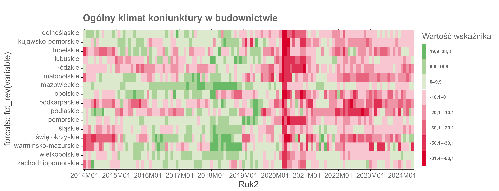

Analiza Danych: Klucz do Sukcesu
Analiza danych to proces przekształcania surowych danych w wartościowe informacje, które mogą wspierać decyzje biznesowe. Dzięki nowoczesnym technologiom, takim jak sztuczna inteligencja i uczenie maszynowe, analiza danych stała się bardziej dostępna i skuteczna niż kiedykolwiek wcześniej.
Jednym z najważniejszych aspektów analizy danych jest możliwość identyfikowania wzorców i trendów, które mogą nie być widoczne na pierwszy rzut oka. Na przykład, analiza danych sprzedażowych może ujawnić sezonowe wzrosty i spadki popytu, co pozwala firmom lepiej planować swoje zasoby i kampanie marketingowe.
W mojej pracy koncentruję się na wykorzystaniu narzędzi takich jak Python i SQL do analizy dużych zbiorów danych. Moim celem jest nie tylko zrozumienie aktualnych trendów, ale także przewidywanie przyszłych zmian, aby pomóc firmom przygotować się na nadchodzące wyzwania. Dzięki analizie danych mogłem już wielokrotnie wspierać moich klientów w podejmowaniu lepszych decyzji biznesowych, co przyczyniło się do ich sukcesu na rynku.